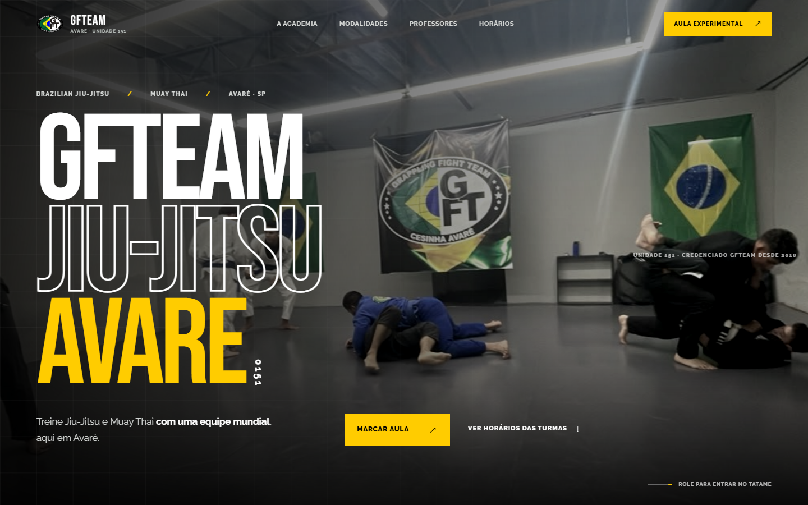

Case 01 / Landing Page / Esporte
GF Team Avaré
Uma presença digital direta para apresentar a academia, orientar novos alunos e conduzir o primeiro contato.

Contexto
Informação para públicos diferentes.
A academia reúne modalidades como Jiu-Jitsu e Muay Thai para crianças, adultos e famílias. O projeto precisava organizar essa oferta e deixar horários, professor e localização fáceis de encontrar.
Solução
Da modalidade à aula experimental.
Uma landing page responsiva com apresentação das aulas, trajetória do professor Cesinha, grade de horários, perguntas frequentes e chamadas diretas para agendamento pelo WhatsApp.
Destaques
- Modalidades para diferentes idades
- Horários e localização em destaque
- FAQ e contato via WhatsApp
Tecnologias
- HTML
- CSS
- JavaScript